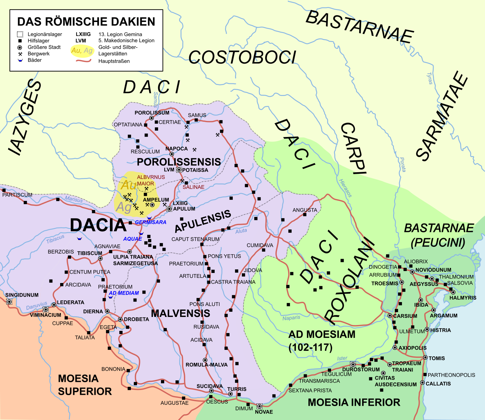
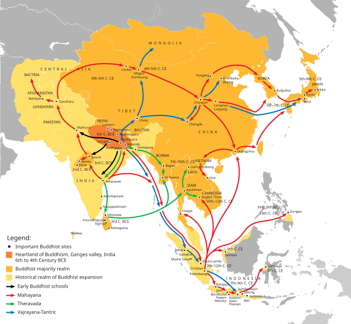
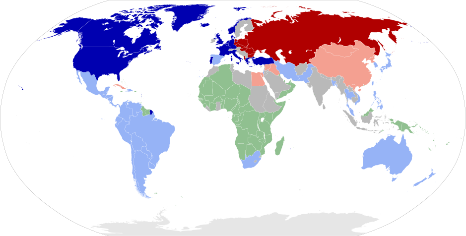
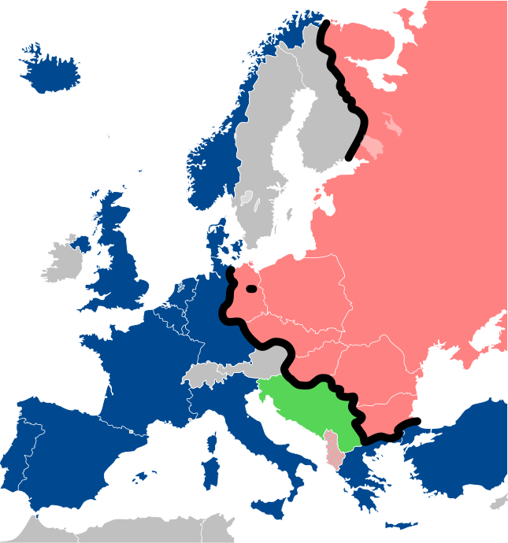
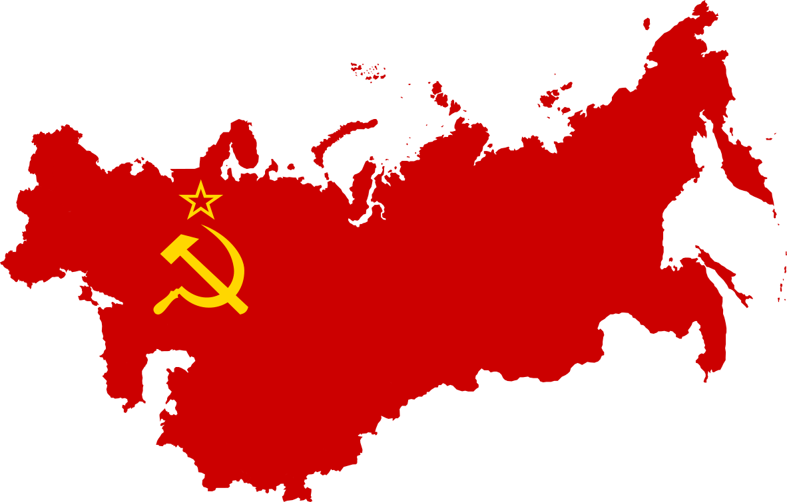

Historical Map Candidates for Palimpsest
Review each map. All are CC-licensed or public domain from Wikimedia Commons.
Pre-history (~200 CE)
Romania
Roman province of Dacia (106-271 AD) - shows Dacia within the Roman Empire

CC BY-SA 3.0 Romania
Pre-history (~200 CE) - Full Empire
Romania
Full Roman Empire map showing extent including Dacia. Very detailed (8.8MB SVG)

CC BY-SA 3.0
5th Century - Buddhist Expansion
Japan
Spread of Buddhism across Asia - shows routes from India through China to Japan

CC (Wikimedia Commons)
5th Century - Slavic Migration
Romania
Early Slavic settlements and migration into the Balkans/Romania region
15th-17th Century - Ottoman Empire
Romania
Ottoman Empire at its height (1683), showing control over Romania region
17th Century - Nanban Trade (Portuguese/Dutch → Japan)
Japan
Nanban trade routes showing Portuguese and Dutch maritime routes to Japan
20th Century - Cold War (1959)
Both
Cold War world map showing US and Soviet spheres of influence. Clean SVG, modern style.

CC BY-SA 4.0
20th Century - Iron Curtain
Romania
Iron Curtain map showing division of Europe - Romania behind the curtain

CC BY-SA 4.0
20th Century - Soviet Sphere of Influence
Romania
Flag-map showing Soviet sphere of influence 1961-1989, including Romania

CC BY-SA 3.0